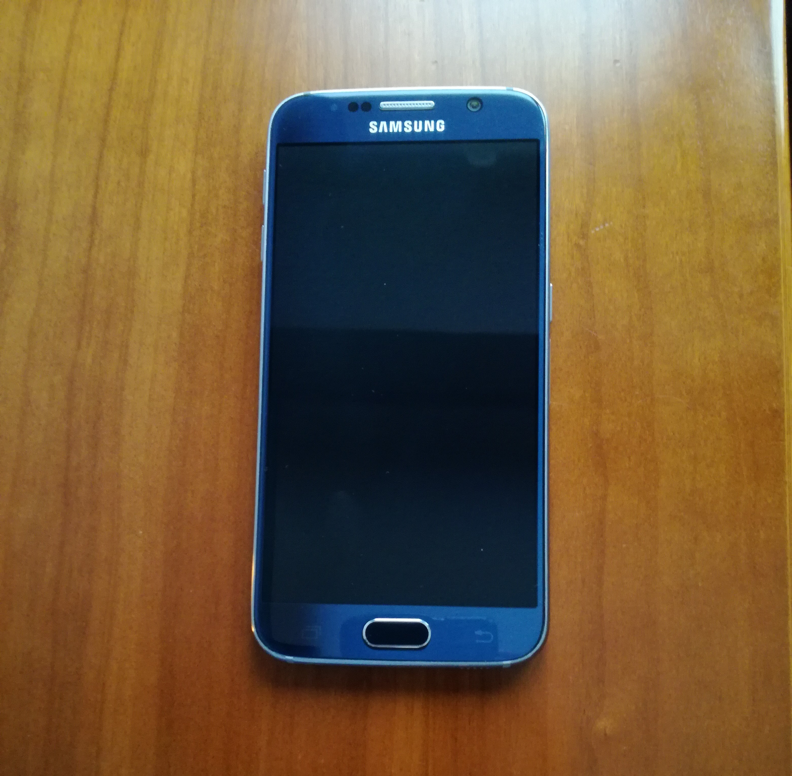

INTRODUCCION
Los medios de comunicación hoy en día son un aspecto primordial en nuestras vidas. Esa necesidad constante de estar informados de todo lo que ocurre a nuestro alrededor se ve saciada por aparatos como la radio, el teléfono, la televisión y el teléfono móvil entre otros. Todos y cada uno de ellos tienen su historia, su funcionalidad específica y a continuación daremos una explicación de cada uno de ellos.
HISTORIA
La divulgación de información a través de medios de comunicación no es algo nuevo, se remonta a los orígenes de la humanidad. Las primeras formas de comunicación se realizaban mediante gestos, sonidos culturales e imágenes. Posteriormente, se utilizó la transmisión oral durante mucho tiempo hasta que apareció la escritura en Roma, donde utilizaban tablones de madera para grabar la información.
En 1440, Johannes Gutenberg revolucionó los medios de comunicación con la imprenta. Con el uso de la imprenta se desarrollaron los escritos y la divulgación a través de la enciclopedia aunque solo estaba disponible para los ricos.
En 1605 un joven alemán Johan Carolus publicó el primer periódico donde escribía un boletín de noticias. Durante muchos años este medio se asentó en el mercado y actualmente sigue siendo uno de los medios preferidos de muchos lectores.
A finales del siglo XIX nacieron los medios audiovisuales y la radio. El primer film llamado “La llegada del tren” dio paso al resto de transmisiones audiovisuales. La radio en cambio, inventada por Marconi permitió la transmisión de voz conocida actualmente.
La historia de la televisión se extiende, aproximadamente desde finales del siglo XIX con la invención del disco de Nipkow por Paul Nipkow, las primeras emisiones públicas de televisión fueron realizadas en Inglaterra por la BBC pero no fue hasta 1936 que comenzaron las emisiones con programación.
Hoy en día, el medio de transmisión más utilizado es internet, donde existen infinitas formas de divulgación. Existen blogs donde el usuario puede informar, noticieros o medios dedicados para la divulgación.